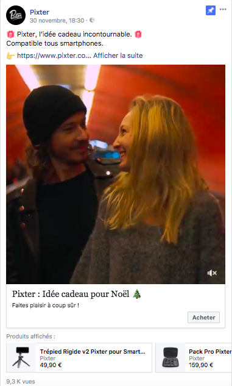
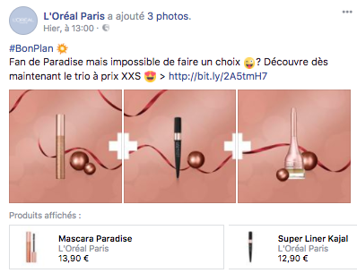
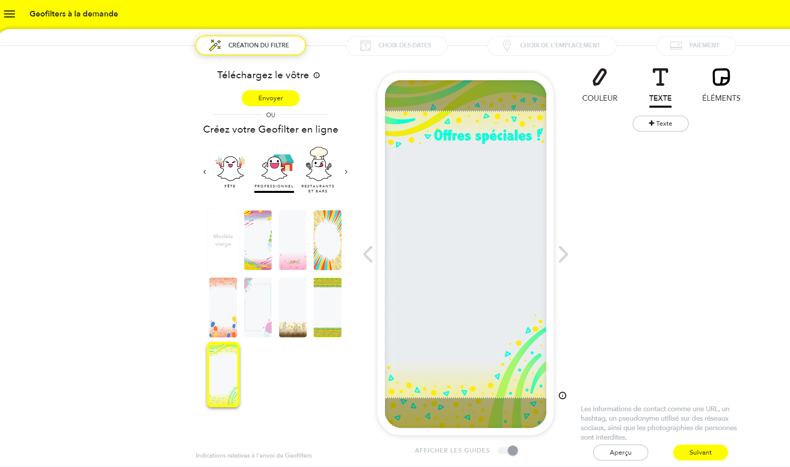
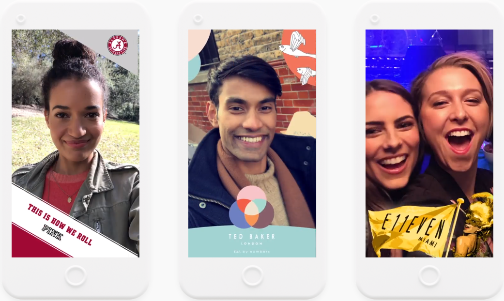
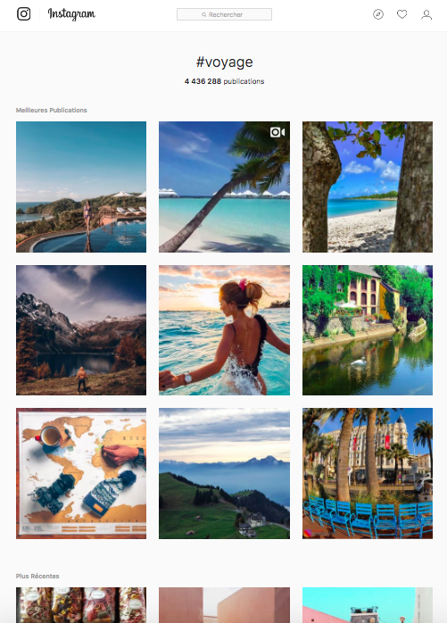

Atteindre et fidéliser les Z
Guide pratique réseaux sociaux
Facebook est le réseau social le plus connu et le plus utilisé par les Millenials. Il est également le réseau comptant le plus d’entreprises actives. Comme pour Internet être présent sur Facebook ne suffit pas ; la visibilité sur ce réseau dépend de la viralité du contenu. Facebook est également le réseau le plus strict et changeant, les entreprises doivent s’adapter aux règles du jeu de l'algorithme secret.
La qualité du contenu est primordial mais le format rentre aussi en compte dans l'algorithme. Favoriser un format plutôt qu’un autre découle de nombreux tests et analyses des résultats. Les KIPS regardés sont les suivants :
- la portée : nombre de lecteurs uniques ayant été atteint
- le nombre d’impressions : nombre de fois ou un post a été visionné
- l’engagement : le total des actions faites sur le post (mention j’aime, commentaire, partage)
Des liens trackés peuvent également fournir des informations aux entreprises :
- le nombre de visites
- le montant dépensé via un lien
Facebook favorise aujourd’hui les vidéos et le contenu natif (directement téléchargé sur le réseau et non un lien externe)
Différents formats sont possibles :
Le carrousel est composé de 2 à 10 images ou vidéos. Ce format est compatible avec une publicité payante.
La boutique : Facebook permet aux entreprises d’ajouter une mini fiche produit sur leurs photos. Le produit créé sera tagué sur la photo et un lien direct vers un site sera possible.
Le canva permet d’avoir une expérience plus riche et adapté à la taille du mobile. Il peut comprendre des images, vidéos, contenus interactifs, bouton d’action.
Les articles : Facebook peut être utilisé comme un blog avec des articles mis en page et accessible via un lien direct sur le compte.
Les Instant Articles : ces articles sont très efficaces sur mobile car ils sont permettent de publier des articles avec un temps de chargement accéléré.
Facebook propose l’amplification de posts. Cela permet d’augmenter la portée d’un post quelque soit le format choisi. La portée payante est efficace car elle permet de segmenter précisément la cible touchée.
De nombreux types de posts sont possibles sur Facebook, leurs diversités permet de créer une page variée et créative :
- Les images
- Les vidéos natives Facebook
- Les vidéos YoutubeLes GIFs animés
- Les memes
- Les jeux concours
- Les lives : tous les lives sont visibles
- Le format 360°, disponible en photos, vidéo ou live
- Les podcasts
- Les liens d’articles
Les entreprises ne peuvent pas contenter d’une communication sur Facebook car les Gen Z sont de plus en plus nombreux à délaisser ce réseau en faveur de nouveaux réseaux ou à ne jamais créer de compte.
Youtube
La référence en matière de vidéo est sans conteste Youtube. La génération Z est également appelée la génération YouTube.
Cette plateforme vidéo/réseau social à part entière tient une grande place dans le quotidien des Z. Une étude menée par Defy Media indique que 95% des 13-20 ans utilisent YouTube et 80% d’entre eux possèdent un compte.
Youtube est devenu pour la nouvelle génération, une alternative à la télévision.
La qualité du contenu que l’on trouve sur cette plateforme varie grandement, allant de vidéos filmées au smartphone à de réels courts métrages de grande qualité.
Les Youtubeurs sont devenu des leaders d’opinion.
De nombreux formats vidéos publicitaires existent. Certains formats fonctionnent davantage selon l’âge de la cible.
L’étude de Millward Brown nous indique que les Gen Z sont favorables aux publicités sur mobiles dites "mobile reward". Ces formats avec un système de récompense qui suscite un grand intérêt chez les Z représente une opportunité pour les marques.
A contrario le format de publicités mobile classique obtient le plus mauvais score des formats publicitaire.
Le format Bumper Ads sur YouTube est un format qui est cohérent avec une cible Z. Ce format de 6 secondes seulement doit être extrêmement impactant dès la première seconde.
Snapchat
Snapchat est une application 100% mobile. Il est impossible d’accéder à Snapchat via un navigateur web. Elle permet de partager des photos, vidéos, messages et des dessins éphémères visiblent deux fois maximum pendant 1 à 10 secondes. Les photos et vidéos ont des filtres qui transforment ou améliorent le contenu de base. Cette application est très utilisée comme messagerie par la nouvelle génération avec 70% des utilisateurs ayant entre 13 et 25 ans.
Il est possible d’envoyer plusieurs types de contenu éphémère appelé un "snap" :
- image fixe
- vidéo
- message texte
Il est également possible de poster des stories (contenu partagé à l’ensemble des abonnés) qui seront visibles pendant 24h autant de fois que voulu.
Quelque soit le format du post il est possible d’ajouter les éléments suivants dessus :
- filtre, animé ou non
- filtre géolocalisé, Il est possible de créer un filtre géolocalisé pour promouvoir un evénements ou un lieu . Les utilisateurs présents dans la zone concernée, pourront ajouter le filtre créé à leurs propres photos.

 - texte
- emoji/ autocollant
Peu d’entreprises se lancent sur Snap qui est pourtant le réseau social privilégié des Z.
Ce réseau est plus contraignant que les autres réseaux classiques. Le contenu posté en story ou en post éphémère est essentiellement créé en directement depuis l’application. Les utilisateurs peuvent depuis quelques temps importer ou dupliquer du contenu d’autres réseaux ce qui n'était pas le cas au lancement de Snap. Beaucoup de marques sont restées à cette fonctionnalité. La priorité est mise sur les coulisses et l'instantané. La qualité visuelle du contenu est beaucoup moins attendue sur Snapchat. Le but est de créer du contenu toujours plus exclusif et à fort engagement. Snapchat nécessite la mise en place d’une stratégie unique et adaptée. Si cette stratégie est bien pensée, les résultats auprès des Z seront probants avec un fort taux d’engagement.
Les marques ciblant les jeunes sur Snap peuvent également se servir de cette application afin de communiquer directement avec eux par messagerie. Le but étant de gagner en notoriété et proximité. Si les coulisses et le contenu "brouillon" spontanés filmés via smartphone restent le contenu majoritaire sur Snap, des campagnes publicitaires créatives sont également efficaces pour cibler cette génération.
Comme d’autres réseaux Snapchat propose des formats publicitaires payants pour les marques.
Source : https://forbusiness.snapchat.com/l/fr-fr/
Les entreprises peuvent surfer sur la tendance du snackable content en lançant des campagnes payantes sur snapchat. Différents formats existent :
- les Snap Ads, publicité diffusées entre les Stories des utilisateurs
- les filtres géolocalisés sponsorisés
Snapchat propose une fonctionnalité premium réservée aux éditeurs de contenus partenaires et non accessible aux marques. Ce format appelé "discover" a pour but de diffuser du contenu éditorial qualitatif, une sorte de magazine 3.0
Exemple de contenu innovant sur snapchat :
L’entreprise Nerf a fait parler d’elle en lançant "Le Snap Le Plus Long" dans une story Snapchat, battant tous les records avec une story de 10 heures.
Pour viraliser ce contenu, il a été relayé sur d’autres réseaux sociaux avec le #LeSnapLePlusLong
https://www.meltystyle.fr/nerf-vous-raconte-la-story-de-joe-la-flechette-pendant-10h-de-live-le-snap-le-plus-long-a562664.html
Exemple marques innovantes :
https://www.powertrafic.fr/marques-snapchat/
La nouveauté de cette année sont les filtres animés : https://www.geekjunior.fr/snapchat-comment-utiliser-filtres-animes-selfies-4103/
Snap est également utilisé par les Z pour entrer en contact avec des personnalités, youtubeurs, chanteur, star de la téléréalité. Les vidéo "j’ouvre vos snap" sont très populaires :
Snapchat présente toutes ses nouveautés sur son site : https://www.snap.com/fr-FR/news/
Instagram est un réseau social américain basé sur le partage d’images et des photos qui compte aujourd’hui plus de 30 millions d’utilisateurs dans le monde . Le design et l’esthétisme ont une place majeure sur cette plateforme. Historiquement c’est un réseau 100% mobile mais quelques fonctionnalités sont désormais accessibles sur ordinateur.
Chaque utilisateur possède un compte et partage à ses abonnés des photos de son quotidien ou des photos inspirationnelles.
La force d’Instagram est d’avoir simplifié et démocratisé les retouches photos permettant à chaque utilisateur d’améliorer ses photos en quelques clics, avant de les partager. Ce réseau est sans surprise un des préférés des Gen Z. Idéal pour des Z qui cherchent à tout prix à maîtriser leur image et partager leur quotidien.
Les photos doivent être inspirantes et belles individuellement mais le plus important est de créer une page esthétique et harmonieuse dans son ensemble. Une grande partie des abonnés verront les photos dans leur ensemble.
Les comptes les plus populaires sur Instagram sont ceux qui sont cohérents et esthétiques. La cohérence se fait par le biais des couleurs utilisées ou des thématiques des photos postées. Les Gen Z apportent une grande importance au design et à l'esthétisme.
L’utilisation des hashtags est très courante sur Instagram. Ils permettent de retrouver un contenu en lien avec un thème. Un utilisateur peut par exemple retrouver toutes les photos Instagram liées au hashtag "voyage" avec une simple recherche :
Résultat de la recherche :
Les photos remontent en fonction de leur popularité ou de la date de publication.
De plus en plus d’entreprises investissent dans un compte Instagram.
Cela leur permet d’identifier une communauté engagée autour d’affinités communes. L’application leur permet de mettre en avant leur image de marque et de communiquer différemment leurs actualités. Instagram permet aux clients d’être en immersion dans l’univers de la marque.
Rachetée en 2012 par Facebook, Instagram fonctionne maintenant avec un algorithme contrôlé par Facebook. De nouvelles contraintes de visibilité sont apparues avec la mise en place cet algorithme changeant. Un faible pourcentage du nombre d’abonnés voit réellement la publication des marques sur Instagram. Il est primordial d’étudier les horaires et jours de publications afin de maximiser le nombre de personnes qui verront la publication sur leur mobile.
Instagram propose des solutions payantes pour booster les publications.
Plusieurs types de posts fonctionnent très bien sur Instagram :
Les photos ou vidéos inspirationnelles
Instagram est avant tout un réseau d’images et d’inspiration. Le compte d’une marque ne doit pas déroger à cette règle. Les utilisateurs d’Instagram aime le contenu qualitatif. Le contenu se rapproche de celui des magazines.
La publication de photos purement inspirationnelles et non reliées à la marque évitent au compte d’être monotone et uniquement commerciale.
Les photos de produits mises en scène
Instagram est la plateforme idéale pour créer un univers autour de tous types d’entreprises et de produits. Il faut mettre en avant un produit ou un service de manière esthétique et design pour donner envie aux Z d’acheter un produit. Il faut faire découvrir un produit autrement que par le biais d’une fiche produit.
Le diaporama
Un nouveau format diaporama offre de nombreuses possibilités créatives aux entreprises.
Ce format est constitué de 10 photos ou vidéos dans un même post. Il est possible de jouer avec ce format et de raconter une histoire.
L’entreprise Cdiscount s’est servi de ce format pour interviewer la blogueuse MaDemoiselle Pierre de manière originale :
https://www.instagram.com/p/BatSt_aliNO/?taken-by=cdiscount
Jeux concours
Les jeux concours permettent d’augmenter la fan base d’un compte. Une des conditions pour participer est de s’abonner au compte Instagram de la marque.
Attention cependant à ne pas se concentrer uniquement sur ce type de contenus. Les communautés de "concouristes" (personnes participants machinalement à un grand nombre de concours) ne sont pas de potentiels clients ni adeptes de la marque.
Un trop grand nombre de concours fera perdre en qualité à la communauté de l’entreprise.
Les citations et dictons
Le contenu écrit mis en forme fonctionne très bien sur Instagram. Ce format permet beaucoup de créativité :
- citations d’auteurs célèbres
- dictons connus ou inventés
- information institutionnelle
- code promo
Les coulisses
La face cachée des marques intéresse les Z. Instagram offre la possibilité de communiquer autour de contenu inédit et visuel.
Les posts Instagram sont un excellent moyen de faire découvrir les coulisses d’une entreprise : filmer le tournage d’une publicité, le déroulement d’une soirée privée, une rencontre, le processus de création d’un produit … les possibilités sont nombreuses et le coût de production minime.
L’UGC
"UGC est le sigle ou raccourci pour "User Generated Content" ou "contenu créé par les utilisateurs". L’UGC désigne donc l’ensemble des contenus créés par les visiteurs sur les sites e-commerce ou de marque ainsi que les contenus postés sur les espaces à vocation communautaire ou d’échange comme des forums ou les médias sociaux."
Remercier sa communauté en partageant du contenu UGC est une pratique sans risque et extrêmement fidélisante et gratifiante.
La relation entre une marque et ses consommateurs est souvent à sens unique. Cela permet donc de mettre en avant les fans et de leur apporter de la reconnaissance.
Lancer un jeu concours autour de la publication d’une photo UGC permet également à la marque de gagner en visibilité et notoriété.
Instagram Story
Le contenu éphémère est une des grandes tendances des derniers réseaux. Initié par SnapChat les autres réseaux sociaux n’ont pas tardé à suivre cet exemple. Une des nouvelles fonctionnalités phares d’Instagram sont les stories. Une story est un contenu éphémère de 24h qui ne sera visible pas sur le compte feed Instagram.
La story disparaîtra au bout de 24 heures mais pourra être vue plusieurs fois par le même utilisateur sans contrainte. Lancée en août 2016 les stories comptent déjà plus de 200 millions d’utilisateurs quotidiens. Cet engouement a permis à Instagram d’améliorer son offre, ajoutant de nombreuses options et possibilités créatives :
- image fixe
- vidéo
- vidéo en direct
- boomerang (séquence vidéo se répétant à l’infinie)
Quelque soit le format de la story il est possible d’ajouter les éléments suivants dessus :
- filtre
- texte
- lien externe (uniquement pour les compte certifiés ou professionnels)
- emoji/ autocollant
- mention/tag
Une des particularités des Stories est le nombre de vidéos visionnées avec le son. Contrairement aux autres réseaux sociaux tels que Facebook ou Twitter, 70 % des stories sont regardées avec le son.
Grâce à leur durée de vie limitée, les stories ont tendance à être davantage spontanées, contrairement aux contenus très travaillés publié sur le compte permanent.
Les stories peuvent être partagées à l’ensemble des abonnés ou seulement aux abonnés sélectionnés.
Ce contenu était uniquement visible via l’application mobile cependant Instagram vient de les rendre accessibles sur un ordinateur.
La manière dont les utilisateurs visionnent les stories est totalement différente des posts feed. Les stories seront visibles en haut de l’application et défilent comme un diaporama.
Avec 2 millions de comptes professionnels actif chaque mois et 80% des utilisateurs suivant au moins un compte professionnel, les stories représentent une réelle opportunités pour les entreprises qui souhaitent communiquer avec leurs communauté régulièrement.
Elles permettent de gagner facilement en visibilité en détournant certaines contraintes imposées par l'algorithme d’Instagram. Ce nouveau format "portrait" force les entreprises à innover, mais lorsque l’exercice est réussi les retombées sont importantes.
Instagram proposent également aux entreprises de sponsoriser leurs stories. Cette option permet de cibler précisément le type d’audience touchée.
Les idées créatives en story sont infinies. En s’appropriant les contraintes techniques certaines marques arrivent à surprendre et à innover.
Monoprix a publié une série de stories réversibles, cette campagne ne ciblait pas les Z mais ce type de mécanique innovantes est une excellente manière d’attirer leur attention :
Découvrez de nombreux exemples d’entreprises ayant recours à la publicité sur instagram : https://business.instagram.com/success/
Plusieurs types de contenus fonctionnent sur Instagram Story :
Partager du contenu unique et exclusif
Les Gen Z cherchent de l’exclusivité et de la transparence. Quelque soit le type de contenu publié, il est important de créer du contenu unique. Cela permet de valoriser la communauté qui aura le sentiment de faire parti d’un groupe privilégié d’initiés. Donner accès à un contenu éphémère disponible, nulle part ailleurs, permet également de fidéliser la communauté, l’incitant à se connecter régulièrement pour ne manquer aucun contenu.
Coulisses et offres exclusives : comme les posts en feed les stories sont un excellent endroit pour dévoiler les coulisses d’une marque. Les stories le sont davantage grâce à leur aspect spontané qui permet de publier du contenu avec pour seul outil un Smartphone.
L’exclusivité peut également se traduire par une offre dédiée à la communauté Instagram Story.
Offrir un code promo uniquement visible en story permet de récompenser sa communauté. Cela permet également de se rendre compte si la communauté Instagram est composée de consommateurs potentiels.
Les stories peuvent également être un format intéressant pour annoncer en avant première la sortie d’un nouveau produit ou service. En plus d’ajouter du contenu pertinent pour la communauté, ce format permet d’avoir des premiers retours en direct des futurs consommateurs. On estime à 1 story sur 5 qui entraîne l’envoi d’un message direct (via la messagerie Instagram) par les abonnés.
Inciter sa communauté à réagir et à donner son avis peut être une source de feedback efficace et rapide.
Une nouvelle fonctionnalité très populaire permet justement de faire voter ses abonnés de manière extrêmement simplifiée.
Le tutoriel
Le tutoriel est un des formats très apprécié sur instagram Story. Grâce à la lecture en diaporama continu, le tutoriel est facilement déclinable pour les entreprises. Il permet aux abonnés de découvrir un produit ou une astuce de manière ludique. Il suffit de découper les étapes en plusieurs stories qui apparaitront les unes après les autres.
Le champ des possibles est très large pour les entreprises.
Musical.ly
Musical.ly est un réseau social particulièrement populaire chez les Z. Créé en 2014 en Chine puis basé aux Etats Unis, ce réseau social 100% mobile permet de réaliser des vidéos musicales en playback ou lèvre-synchro et de les partager sur d’autres réseaux sociaux.
Le principe est assez simple. Il faut commencer par choisir un extrait d’une chanson de quelques secondes sur l’application, apprendre les paroles, imaginer ou reproduire une chorégraphie, filmer le tout en créant des effets et transitions originales. L’application filme en ralenti les mouvements puis les accélère, ce qui donne ce type de vidéo :
Musical.ly a connu un immense succès en 2016 en se hissant en TOP 1 des applications téléchargées dans une vingtaine de pays puis TOP 25 des applications gratuites depuis un an se plaçant juste derrière YouTube et Facebook en France. L’application compte plus de 60 millions de "Musers" dans le monde (nom donné aux utilisateurs de Musical.ly). Le succès de Musical.ly repose en parti sur le besoin de création et de lumière des Gen Z. Cette application leur donne un "super pouvoir", celui de chanter et de se mettre en avant sans réel talent de chanteur.
L’application est un réseau social à part entière et complet. En plus de la fonctionnalité de base, le réseau propose une messagerie, des lives (via l’application Live.ly), des informations sur les sorties musicales. Chaque utilisateur a un compte privé ou public avec une communauté assidue de followers. Les vidéos créées sortent du scope de l’application en atterrissant sur Youtube. De nombreux utilisateurs sont devenus des stars sur Internet grâce à cette application.
Les chanteurs professionnels ont compris l’ampleur de ce réseau et s’en servent pour promouvoir leur création parfois même en avant première et augmenter leur notoriété.
Les "musers" reproduisent les videos populaires et les rivalisent grâce à l’utilisation de #.
Musical.ly est une plateforme idéale pour cibler la génération Z. Le business model de l’application n’est pas encore basé sur les publicités les marques doivent donc faire preuve d’inventivité pour atteindre les utilisateurs.
Whisper
"Murmure" en anglais Whisper est un réseau social, essentiellement mobile mais disponible sur desktop. Sa particularité ?
L’anonymat, très apprécié par les Z. Les utilisateurs partagent conseils, photos, pensées entre anonymes du monde entier. Whisper va au contre courant total par rapport aux autres réseaux sociaux. L’avantage de l’anonymat est qu il n’y a plus de pression ou de contrôle de l’image. Whisper va en donc encore plus loin que Snapchat en proposant un contenu perrène. Ce réseau plait aux adolescents qui interagissent dans un environnement où ils se sentent plus libres. Avec plus de 30 millions d’utilisateurs mondiaux mensuels en 2017, ce réseau social commence à séduire les marques. Les entreprises comme Coca-Cola (exemple http://www.adweek.com/digital/coke-tests-whispers-advertising-potential-most-perfect-way-166691/#/), ou paramont se sont prêtées à l'exercice encore très peu maîtrisé par les marques.
Ask
Ask est un autre réseau social basé sur l'anonymat très apprécié des Z.
Les échanges se présentent sous forme de textes ou de vidéos dans lesquels les utilisateurs posent ou répondent à des questions. Les questions ainsi que les réponses peuvent être anonymes. Le plus souvent les personnes s’abonnent aux comptes non anonymes afin de poser une question.
Le but de cette application est la viralité et la popularité pour les utilisateurs Z.
Ce réseau est très décrié à cause du nombre important de harcèlements subis. Une personne peut s'adresser anonymement à une personne identifiée. Cet anonymat partiel est le moyen idéal pour les harceleurs d’atteindre une personne ciblée.
Placé dans le top 10 mondial des réseaux sociaux, Ask propose aux entreprises de placer de la publicité sur l’application et ainsi cibler une audience très jeune.
De nombreux influenceurs se servent de cette application pour communiquer et répondre aux questions de leurs fans.
Pinterest est un réseau social actif orienté sur l’image, essentiellement féminin avec 85% de femmes. Un lexique spécifique est appliqué à Pinterest.
- Épingle : une épingle est une image que l’on va associer à un tableau, enregistrée - comme un "favori"
- Tableau : un compte Pinterest est composé de plusieurs tableaux qui doivent être cohérents et compréhensibles. Un tableau est le regroupement de plusieurs épingles sous un même thème.
- Re épingler (Re-Pint) : l’ajout, sur un profil, d’une image déjà enregistrée par un autre utilisateur, dans la même logique que "retweeter"
Pinterest est un outil de curation, un catalogue d’idées et d'inspirations, une énorme "wishlist" de produits à acheter, ou d'idées à reproduire.
Un moteur de recherche dont le but est de s'inspirer et de sauvegarder.
Les images postées n'ont donc pas besoin d'être esthétiquement reliées mais elles doivent être classées.
Alors que les marques ont pour objectif de rendre visible leurs contenus, les utilisateurs sont eux-mêmes désireux de trouver des idées provenants de marques. Pour suivre les nouvelles photos, les utilisateurs peuvent s'abonner à un compte global ou seulement à un tableau.
Pinterest est un réseau social actif. Les marques ont l’opportunité de toucher une audience en phase de considération, ouverte à de nouvelles idées et prête à passer à l’action.
Pinterest permet de générer du trafic au contraire d’Instagram qui est plus dans un objectif de visibilité.
Pinterest est un outil de curation pour les utilisateurs. "La curation est la pratique qui consiste à effectuer une veille sur un domaine d’activité donné puis à sélectionner l’information considérée comme pertinente avant de la proposer de façon claire et organisée à une audience cible." (source www.definitions-marketing.com) Une grande partie de la notoriété de l’entreprise passera directement par les consommateurs via le bouton de partage sur les fiches produits.
Pour une entreprise se lançant sur Pinterest un reporting mensuel est cohérent.
Des KPI’s spécifiques à Pinterest permettront de s’assurer de la bonne évolution du compte :
- nombre de produits épinglés (nombre de photos de la marque enregistrées dans des tableaux - pin venant directement du site de la marque)
- nombre de photos re-épinglées
- nombre de personne ayant re-épinglé la photo (depuis le compte pinterest de la marque ou celui d'un autre utilisateur)
- la clé pour créer de l'engagement est d'être re-épinglé le maximum de fois
- nombre d'impressions
- nombre de visiteurs uniques
Les marques peuvent innover et créer des partenariats uniques via cette plateforme : http://www.strategies.fr/blogs-opinions/blogs-favoris/1070280W/le-concours-de-la-plus-belle-chambre-sur-pinterest.html